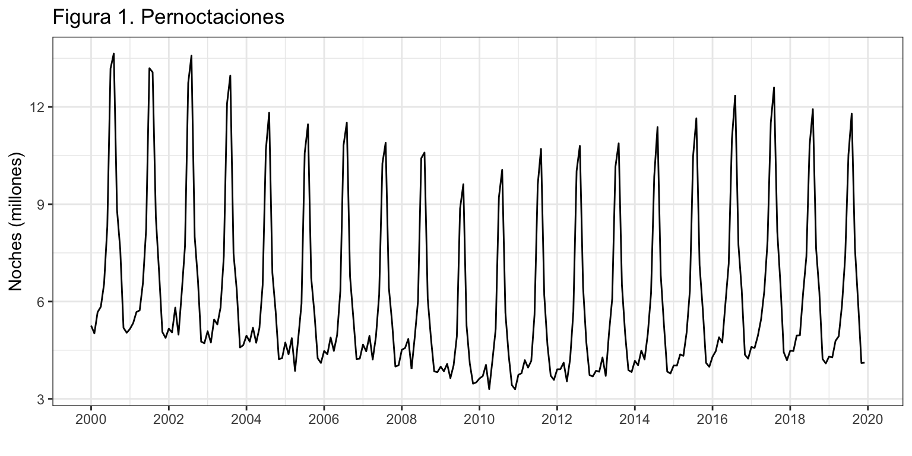
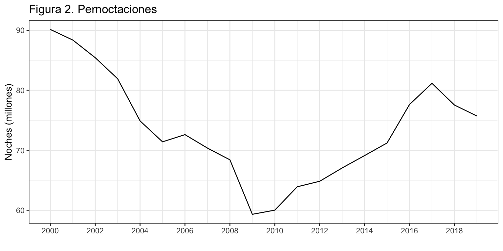
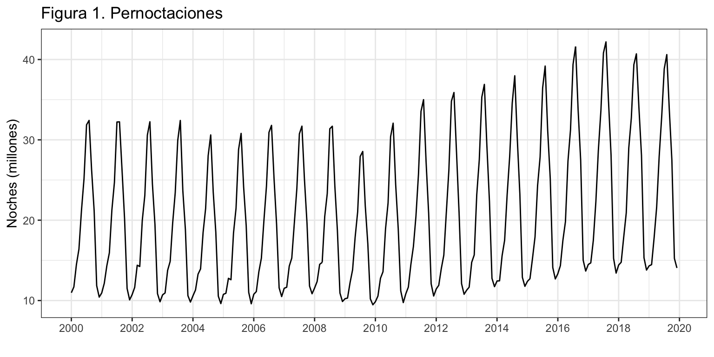
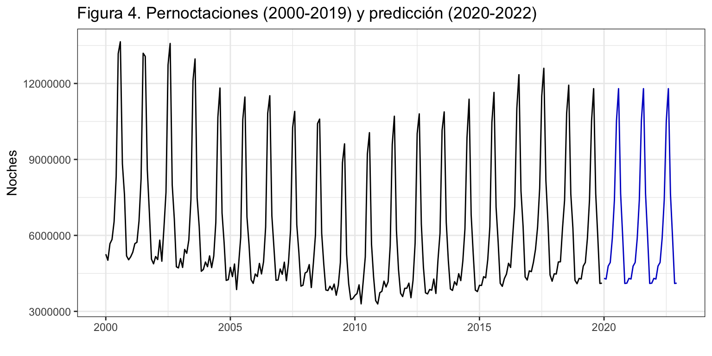
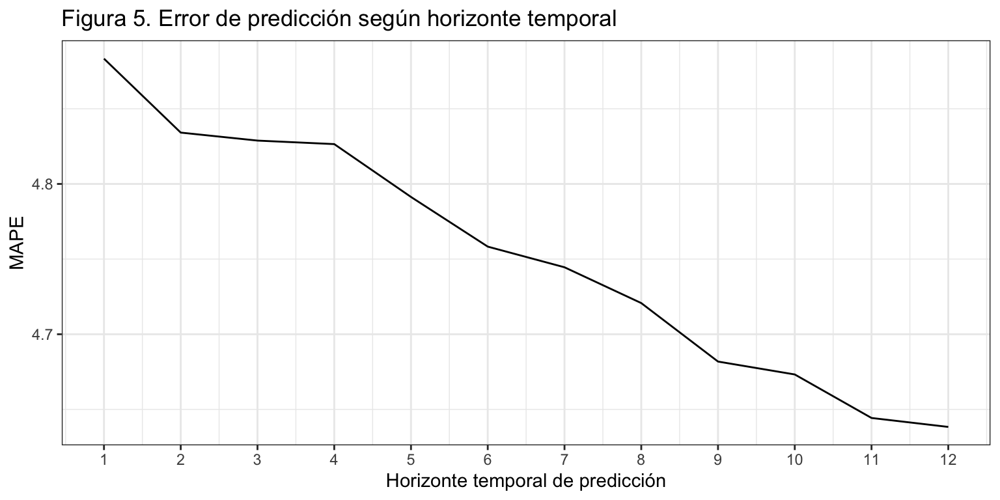

Introducción
Consideremos de nuevo la serie temporal correspondiente al número de pernoctaciones que los turistas extranjeros realizan en España en alojamientos turísticos autorizados (que llamaremos Pernoctaciones en adelante). Esta serie está disponible en Eurostat desde enero de 2000 hasta diciembre de 2019, un total de 20 años y 240 observaciones.
La serie presenta tendencia decreciente hasta finales de la primera década del presente siglo y luego creciente hasta los dos últimos años. La estacionalidad de orden 12 esta determinada por las vacaciones de verano. El esquema es multiplicativo.

Vamos a ajustar y predecir esta serie por métodos sencillos. La calidad de ajuste que obtengamos y la capacidad predictiva serán el punto de referencia cuando apliquemos metodologías más complejas de predicción.
Predicción por métodos simples para la serie anual
Vamos a empezar considerando la serie anual de Pernoctaciones, en millones, para identificar el método sencillo de predicción más adecuado.

Identificación del método sencillo con mejor ajuste
Para series sin estacionalidad tenemos tres aproximaciones por métodos sencillos: media simple, método ingenuo I y método de la deriva. Veamos en primer lugar cual de ellos ajusta mejor a los datos, es decir, cual ofrece las mejores predicciones intra-muestrales a un periodo vista.
mediaPernoctaciones <- meanf(PernoctacionesAnual, h = 5)
naivePernoctaciones <- naive(PernoctacionesAnual, h = 5)
derivaPernoctaciones <- rwf(PernoctacionesAnual, h = 5, drift = TRUE)
autoplot(PernoctacionesAnual, series = "Pernoctaciones",
xlab = "",
ylab = "Noches (millones)",
main = "Figura 3. Pernoctaciones y predicción por métodos sencillos") +
autolayer(mediaPernoctaciones, series="Media", PI = FALSE) +
autolayer(naivePernoctaciones, series="Ingenuo", PI = FALSE) +
autolayer(derivaPernoctaciones, series="Deriva", PI = FALSE) +
scale_colour_discrete(limits=c("Pernoctaciones", "Media", "Ingenuo", "Deriva")) +
guides(colour = guide_legend(title = "Métodos")) +
theme(legend.position=c(0.02,0.98), legend.justification=c(0,1))

La figura 3 muestra que solo el método con deriva captura la tendencia decreciente observada en los últimos años. Veamos la capacidad de ajuste de cada método
ME RMSE MAE MPE MAPE MASE ACF1
Media 0.00 8.56 7.08 -1.36 9.73 2.22 0.81
Ingenuo I -0.76 3.83 3.18 -1.07 4.45 1.00 0.42
Deriva 0.00 3.75 3.14 -0.01 4.44 0.99 0.42
Tanto el método ingenuo I, como el método de la deriva resultan igualmente buenos respecto a su ajuste a los datos (MAPE de 4.4%. El primero, porque repetir el último dato siempre es una buena estrategia para series que no cambian bruscamente de nivel. El segundo, porque considerar la pendiente media pasada es también una buena estrategia, que solo fallará en los periodos de cambio de tendencia.
Predicciones
Una vez identificado el mejor método sencillo de ajuste para la serie anual, mostramos las predicciones numéricamente.
Point Forecast Lo 80 Hi 80 Lo 95 Hi 95
2020 75.70578 70.79836 80.61319 68.20054 83.21102
2021 75.70578 68.76565 82.64591 65.09176 86.31979
2022 75.70578 67.20589 84.20567 62.70632 88.70523
2023 75.70578 65.89095 85.52060 60.69530 90.71626
2024 75.70578 64.73247 86.67909 58.92355 92.48800
Nota: la Covid-19 ha supuesto un shock de una magnitud inesperada en todos los aspectos de la sociedad a nivel mundial y, en concreto, para el turismo nacional e internacional. Es por ello que todas las predicciones que aparecen en este ejemplo de aplicación y los siguientes sobre-estimarán enormemente las cifras de Pernoctaciones reales. Cualquier método de predicción asume que las condiciones del entorno en que se aplica no van a cambiar en el futuro.
Predicción por el método ingenuo con estacionalidad
Vamos ahora a ajustar y predecir la serie mensual de pernoctaciones por el método más sencillo posible, el método ingenuo con estacionalidad. Recordemos que en este modelo la predicción para un mes consiste en la última observación del mismo mes disponible.
Solicitaremos un horizonte de predicciones de 36 meses h = 36 (aunque solo mostramos los 12 primeros meses).
Point Forecast Lo 95 Hi 95
Jan 2020 4303008 3508475 5097541
Feb 2020 4276924 3482391 5071457
Mar 2020 4787343 3992810 5581876
Apr 2020 4932152 4137619 5726685
May 2020 5891503 5096970 6686036
Jun 2020 7394769 6600236 8189302
Jul 2020 10528074 9733541 11322607
Aug 2020 11795992 11001459 12590525
Sep 2020 7644198 6849665 8438731
Oct 2020 5933838 5139305 6728371
Nov 2020 4103339 3308806 4897872
Dec 2020 4114637 3320104 4909170
La calidad del ajuste es bastante buena, con un MAPE de 5.3% y un RMSE de 400 mil pernoctaciones (o 300 mil si usamos el MAE). Sin embargo, el ACF1, cercano a uno es 1, indica que hay mucho rango de mejora en la predicción por intervalo.
ME RMSE MAE MPE MAPE MASE ACF1
Training set -63285.89 405381.2 308385.7 -1.163295 5.318728 1 0.7222781
La figura 4 muestra los valores de predicción para los próximos tres años. Observa que las predicciones para 2020 se mantienen constantes y son iguales a las pernoctaciones de 2019.

Validación
Vamos de nuevo a aplicar el método de origen de predicción móvil para obtener los errores extra-muestrales según el horizonte de previsión.
Asumimos que se precisan diez años para hacer una buena estimación, \(k=120\), y que el horizonte temporal es un año, \(h = 12\) meses.
[1] 4.883350 4.834164 4.828850 4.826510 4.791348 4.758310 4.744558 4.720736
[9] 4.681830 4.673242 4.644297 4.638341

La figura 5 muestra el error de previsión extra-muestral según el horizonte de previsión. Cuidado con la interpretación. El error prácticamente no varía con el horizonte temporal y se mueve entre el 4.6% y el 4.9%.
LS0tCnRpdGxlOiAiUGVybm9jdGFjaW9uZXMgZW4gYWxvamFtaWVudG9zIHR1csOtc3RpY29zIGRlIHR1cmlzdGFzIGV4dHJhbmplcm9zIgpzdWJ0aXRsZTogIk3DqXRvZG8gaW5nZW51byIKYXV0aG9yOiAiSXbDoW4gQXJyaWJhcyAoRGVwdG8uIEFuw6FsaXNpcyBFY29uw7NtaWNvLiBVbml2ZXJzaXRhdCBkZSBWYWzDqG5jaWEpIgpvdXRwdXQ6IAogIGh0bWxfZG9jdW1lbnQ6CiAgICB0aGVtZTogY2VydWxlYW4KICAgIGhpZ2hsaWdodDogcHlnbWVudHMgCiAgICBmaWdfY2FwdGlvbjogZmFsc2UKICAgIGRmX3ByaW50OiBrYWJsZQogICAgdG9jOiB0cnVlCiAgICB0b2NfZGVwdGg6IDIKICAgIG51bWJlcl9zZWN0aW9uczogdHJ1ZQogICAgc2VsZl9jb250YWluZWQ6IHRydWUKICAgIGNvZGVfZG93bmxvYWQ6IHRydWUKLS0tCgpgYGB7ciBjaHVua19zZXR1cCwgZWNobyA9IEZBTFNFfQprbml0cjo6b3B0c19jaHVuayRzZXQod2FybmluZyA9IEZBTFNFLCAKICAgICAgICAgICAgICAgICAgICAgIG1lc3NhZ2UgPSBGQUxTRSwgCiAgICAgICAgICAgICAgICAgICAgICBjb21tZW50ID0gIiIsCiAgICAgICAgICAgICAgICAgICAgICBmaWcuYWxpZ24gPSAiY2VudGVyIiwgCiAgICAgICAgICAgICAgICAgICAgICBmaWcuc2hvdyA9ICJob2xkIiwKICAgICAgICAgICAgICAgICAgICAgIGZpZy5oZWlnaHQgPSA0LAogICAgICAgICAgICAgICAgICAgICAgZmlnLndpZHRoID0gOCwKICAgICAgICAgICAgICAgICAgICAgIG91dC53aWR0aCA9ICI4MCUiKSAKYGBgCgpgYGB7ciBvcHRpb25zX3NldHVwLCBlY2hvID0gRkFMU0V9Cm9wdGlvbnMoc2NpcGVuID0gOTk5KSAjLSBwYXJhIHF1aXRhciBsYSBub3RhY2lvbiBjaWVudGlmaWNhCmBgYAoKYGBge3IgbGlicmVyaWFzLCBlY2hvID0gRkFMU0V9CmxpYnJhcnkoZm9yZWNhc3QpCmxpYnJhcnkoZ2dwbG90Mik7IHRoZW1lX3NldCh0aGVtZV9idygpKQpsaWJyYXJ5KGdyaWRFeHRyYSkKbGlicmFyeShncmlkKQpgYGAKClwKXAoKIyBJbnRyb2R1Y2Npw7NuCgpDb25zaWRlcmVtb3MgZGUgbnVldm8gbGEgc2VyaWUgdGVtcG9yYWwgY29ycmVzcG9uZGllbnRlIGFsIG7Dum1lcm8gZGUgcGVybm9jdGFjaW9uZXMgcXVlIGxvcyB0dXJpc3RhcyBleHRyYW5qZXJvcyByZWFsaXphbiBlbiBFc3Bhw7FhIGVuIGFsb2phbWllbnRvcyB0dXLDrXN0aWNvcyBhdXRvcml6YWRvcyAocXVlIGxsYW1hcmVtb3MgUGVybm9jdGFjaW9uZXMgZW4gYWRlbGFudGUpLiBFc3RhIHNlcmllIGVzdMOhIGRpc3BvbmlibGUgZW4gRXVyb3N0YXQgZGVzZGUgZW5lcm8gZGUgMjAwMCBoYXN0YSBkaWNpZW1icmUgZGUgMjAxOSwgdW4gdG90YWwgZGUgMjAgYcOxb3MgeSAyNDAgb2JzZXJ2YWNpb25lcy4KCkxhIHNlcmllIHByZXNlbnRhIHRlbmRlbmNpYSBkZWNyZWNpZW50ZSBoYXN0YSBmaW5hbGVzIGRlIGxhIHByaW1lcmEgZMOpY2FkYSBkZWwgcHJlc2VudGUgc2lnbG8geSBsdWVnbyBjcmVjaWVudGUgaGFzdGEgbG9zIGRvcyDDumx0aW1vcyBhw7Fvcy4gTGEgZXN0YWNpb25hbGlkYWQgZGUgb3JkZW4gMTIgZXN0YSBkZXRlcm1pbmFkYSBwb3IgbGFzIHZhY2FjaW9uZXMgZGUgdmVyYW5vLiBFbCBlc3F1ZW1hIGVzIG11bHRpcGxpY2F0aXZvLgoKYGBge3J9CgpQZXJub2N0YWNpb25lcyA8LSByZWFkLmNzdjIoIi4vc2VyaWVzL1Blcm5vY3RhY2lvbmVzLmNzdiIsIGhlYWRlciA9IFRSVUUpClBlcm5vY3RhY2lvbmVzIDwtIHRzKFBlcm5vY3RhY2lvbmVzWywgMl0sIHN0YXJ0ID0gMjAwMCwgZnJlcXVlbmN5ID0gMTIpCmBgYAoKYGBge3J9CmF1dG9wbG90KFBlcm5vY3RhY2lvbmVzLzEwMDAwMDAsCiAgICAgICAgIHhsYWIgPSAiIiwKICAgICAgICAgeWxhYiA9ICJOb2NoZXMgKG1pbGxvbmVzKSIsCiAgICAgICAgIG1haW4gPSAiRmlndXJhIDEuIFBlcm5vY3RhY2lvbmVzIikgKwogIHNjYWxlX3hfY29udGludW91cyhicmVha3M9IHNlcSgyMDAwLCAyMDIwLCAyKSkgIApgYGAKClZhbW9zIGEgYWp1c3RhciB5IHByZWRlY2lyIGVzdGEgc2VyaWUgcG9yIG3DqXRvZG9zIHNlbmNpbGxvcy4gTGEgY2FsaWRhZCBkZSBhanVzdGUgcXVlIG9idGVuZ2Ftb3MgeSBsYSBjYXBhY2lkYWQgcHJlZGljdGl2YSBzZXLDoW4gZWwgcHVudG8gZGUgcmVmZXJlbmNpYSBjdWFuZG8gYXBsaXF1ZW1vcyBtZXRvZG9sb2fDrWFzIG3DoXMgY29tcGxlamFzIGRlIHByZWRpY2Npw7NuLgoKXApcCgojIFByZWRpY2Npw7NuIHBvciBtw6l0b2RvcyBzaW1wbGVzIHBhcmEgbGEgc2VyaWUgYW51YWwKClZhbW9zIGEgZW1wZXphciBjb25zaWRlcmFuZG8gbGEgc2VyaWUgYW51YWwgZGUgUGVybm9jdGFjaW9uZXMsIGVuIG1pbGxvbmVzLCBwYXJhIGlkZW50aWZpY2FyIGVsIG3DqXRvZG8gc2VuY2lsbG8gZGUgcHJlZGljY2nDs24gbcOhcyBhZGVjdWFkby4KCmBgYHtyfQpQZXJub2N0YWNpb25lc0FudWFsID0gYWdncmVnYXRlKFBlcm5vY3RhY2lvbmVzLzEwMDAwMDAsIEZVTiA9IHN1bSkKCmF1dG9wbG90KFBlcm5vY3RhY2lvbmVzQW51YWwsCiAgICAgICAgIHhsYWIgPSAiIiwKICAgICAgICAgeWxhYiA9ICJOb2NoZXMgKG1pbGxvbmVzKSIsCiAgICAgICAgIG1haW4gPSAiRmlndXJhIDIuIFBlcm5vY3RhY2lvbmVzIikgKwogIHNjYWxlX3hfY29udGludW91cyhicmVha3M9IHNlcSgyMDAwLCAyMDIwLCAyKSkgCmBgYAoKIyMgSWRlbnRpZmljYWNpw7NuIGRlbCBtw6l0b2RvIHNlbmNpbGxvIGNvbiBtZWpvciBhanVzdGUKClBhcmEgc2VyaWVzIHNpbiBlc3RhY2lvbmFsaWRhZCB0ZW5lbW9zIHRyZXMgYXByb3hpbWFjaW9uZXMgcG9yIG3DqXRvZG9zIHNlbmNpbGxvczogbWVkaWEgc2ltcGxlLCBtw6l0b2RvIGluZ2VudW8gSSB5IG3DqXRvZG8gZGUgbGEgZGVyaXZhLiBWZWFtb3MgZW4gcHJpbWVyIGx1Z2FyIGN1YWwgZGUgZWxsb3MgYWp1c3RhIG1lam9yIGEgbG9zIGRhdG9zLCBlcyBkZWNpciwgY3VhbCBvZnJlY2UgbGFzIG1lam9yZXMgcHJlZGljY2lvbmVzIGludHJhLW11ZXN0cmFsZXMgYSB1biBwZXJpb2RvIHZpc3RhLgoKYGBge3J9Cm1lZGlhUGVybm9jdGFjaW9uZXMgPC0gbWVhbmYoUGVybm9jdGFjaW9uZXNBbnVhbCwgaCA9IDUpCm5haXZlUGVybm9jdGFjaW9uZXMgPC0gbmFpdmUoUGVybm9jdGFjaW9uZXNBbnVhbCwgaCA9IDUpCmRlcml2YVBlcm5vY3RhY2lvbmVzIDwtIHJ3ZihQZXJub2N0YWNpb25lc0FudWFsLCAgaCA9IDUsIGRyaWZ0ID0gVFJVRSkKCmF1dG9wbG90KFBlcm5vY3RhY2lvbmVzQW51YWwsIHNlcmllcyA9ICJQZXJub2N0YWNpb25lcyIsCiAgICAgICAgICAgICAgICB4bGFiID0gIiIsCiAgICAgICAgICAgICAgICB5bGFiID0gIk5vY2hlcyAobWlsbG9uZXMpIiwKICAgICAgICAgICAgICAgIG1haW4gPSAiRmlndXJhIDMuIFBlcm5vY3RhY2lvbmVzIHkgcHJlZGljY2nDs24gcG9yIG3DqXRvZG9zIHNlbmNpbGxvcyIpICsKICBhdXRvbGF5ZXIobWVkaWFQZXJub2N0YWNpb25lcywgc2VyaWVzPSJNZWRpYSIsIFBJID0gRkFMU0UpICsKICBhdXRvbGF5ZXIobmFpdmVQZXJub2N0YWNpb25lcywgc2VyaWVzPSJJbmdlbnVvIiwgUEkgPSBGQUxTRSkgKwogIGF1dG9sYXllcihkZXJpdmFQZXJub2N0YWNpb25lcywgc2VyaWVzPSJEZXJpdmEiLCBQSSA9IEZBTFNFKSArCiAgc2NhbGVfY29sb3VyX2Rpc2NyZXRlKGxpbWl0cz1jKCJQZXJub2N0YWNpb25lcyIsICJNZWRpYSIsICJJbmdlbnVvIiwgIkRlcml2YSIpKSArCiAgZ3VpZGVzKGNvbG91ciA9IGd1aWRlX2xlZ2VuZCh0aXRsZSA9ICJNw6l0b2RvcyIpKSArIAogIHRoZW1lKGxlZ2VuZC5wb3NpdGlvbj1jKDAuMDIsMC45OCksIGxlZ2VuZC5qdXN0aWZpY2F0aW9uPWMoMCwxKSkKYGBgCgpMYSBmaWd1cmEgMyBtdWVzdHJhIHF1ZSBzb2xvIGVsIG3DqXRvZG8gY29uIGRlcml2YSBjYXB0dXJhIGxhIHRlbmRlbmNpYSBkZWNyZWNpZW50ZSBvYnNlcnZhZGEgZW4gbG9zIMO6bHRpbW9zIGHDsW9zLiBWZWFtb3MgbGEgY2FwYWNpZGFkIGRlIGFqdXN0ZSBkZSBjYWRhIG3DqXRvZG8KCmBgYHtyfQp0bXAgPC0gcmJpbmQoCiAgYWNjdXJhY3kobWVkaWFQZXJub2N0YWNpb25lcyksCiAgYWNjdXJhY3kobmFpdmVQZXJub2N0YWNpb25lcyksCiAgYWNjdXJhY3koZGVyaXZhUGVybm9jdGFjaW9uZXMpCikKdG1wIDwtIHJvdW5kKHRtcCwyKQpyb3duYW1lcyh0bXApIDwtIGMoIk1lZGlhIiwiSW5nZW51byBJIiwiRGVyaXZhIikKdG1wCmBgYAoKVGFudG8gZWwgbcOpdG9kbyBpbmdlbnVvIEksIGNvbW8gZWwgbcOpdG9kbyBkZSBsYSBkZXJpdmEgcmVzdWx0YW4gaWd1YWxtZW50ZSBidWVub3MgcmVzcGVjdG8gYSBzdSBhanVzdGUgYSBsb3MgZGF0b3MgKE1BUEUgZGUgNC40JS4gRWwgcHJpbWVybywgcG9ycXVlIHJlcGV0aXIgZWwgw7psdGltbyBkYXRvIHNpZW1wcmUgZXMgdW5hIGJ1ZW5hIGVzdHJhdGVnaWEgcGFyYSBzZXJpZXMgcXVlIG5vIGNhbWJpYW4gYnJ1c2NhbWVudGUgZGUgbml2ZWwuIEVsIHNlZ3VuZG8sIHBvcnF1ZSBjb25zaWRlcmFyIGxhIHBlbmRpZW50ZSBtZWRpYSBwYXNhZGEgZXMgdGFtYmnDqW4gdW5hIGJ1ZW5hIGVzdHJhdGVnaWEsIHF1ZSBzb2xvIGZhbGxhcsOhIGVuIGxvcyBwZXJpb2RvcyBkZSBjYW1iaW8gZGUgdGVuZGVuY2lhLgoKXAoKIyMgSWRlbnRpZmljYWNpw7NuIGRlbCBtw6l0b2RvIHNlbmNpbGxvIGNvbiBtZWpvciBwcmVkaWNjacOzbiBleHRyYS1tdWVzdHJhbAoKWWEgaGVtb3MgdmlzdG8gcXVlIHBhcmEgbG9zIGRvcyBtZWpvcmVzIG3DqXRvZG9zIGVsIGVycm9yIGVzIHByw7N4aW1vIGFsIDQuNCUuIEVzdGUgdmFsb3IgZXMgbGEgZXN0aW1hY2nDs24gZGVsIF9lcnJvciBlbiBsYSBwcmV2aXNpw7NuIGludHJhLW11ZXN0cmFsIHkgYSB1biBwZXJpb2RvIHZpc3RhXy4gQSBmaW4gZGUgcG9kZXIgZXN0aW1hciBtZWpvciBsYSBjYXBhY2lkYWQgcHJlZGljdGl2YSBkZSBsb3MgZG9zIG3DqXRvZG9zIHZhbW9zIGEgYXBsaWNhciBlbCBtw6l0b2RvIGRlIF9fb3JpZ2VuIGRlIHByZWRpY2Npw7NuIG3Ds3ZpbF9fIHBhcmEgb2J0ZW5lciBsb3MgZXJyb3JlcyBleHRyYS1tdWVzdHJhbGVzIHNlZ8O6biBlbCBob3Jpem9udGUgZGUgcHJldmlzacOzbi4KCkFzdW1pcmVtb3MgcXVlIG5lY2VzaXRhbW9zIDEwIGHDsW9zIHBhcmEgb2J0ZW5lciB1biBidWVuYSBlc3RpbWFjacOzbi4gTGEgc2lndWllbnRlIHJ1dGluYSBwZXJtaXRlIG9idGVuZXIgZWwgTUFQRSBwYXJhIHByZXZpc2lvbmVzIGNvbiB1biBob3Jpem9udGUgdGVtcG9yYWwgZGVzZGUgMSBtZXMgaGFzdGEgNSBtZXNlcy4KCmBgYHtyfQprIDwtIDEwICAgICAgICAgICAgICAgICAgI01pbmltbyBudW1lcm8gZGUgZGF0b3MgcGFyYSBlc3RpbWFyCmggPC0gNSAgICAgICAgICAgICAgICAgICAjSG9yaXpvbnRlIGRlIGxhcyBwcmVkaWNpY2lvbmVzClRUIDwtIGxlbmd0aChQZXJub2N0YWNpb25lc0FudWFsKSAjTG9uZ2l0dWQgc2VyaWUKcyA8LSBUVCAtIGsgLSBoICAgICAgICAgICAjVG90YWwgZGUgZXN0aW1hY2lvbmVzCgptYXBlTmFpdmVJIDwtIG1hdHJpeChOQSwgcyArIDEsIGgpCm1hcGVEZXJpdmEgPC0gbWF0cml4KE5BLCBzICsgMSwgaCkKCmZvciAoaSBpbiAwOnMpIHsKICB0cmFpbi5zZXQgPC0gc3Vic2V0KFBlcm5vY3RhY2lvbmVzQW51YWwsIHN0YXJ0ID0gaSArIDEsIGVuZCA9IGkgKyBrKQogIHRlc3Quc2V0IDwtICBzdWJzZXQoUGVybm9jdGFjaW9uZXNBbnVhbCwgc3RhcnQgPSBpICsgayArIDEsIGVuZCA9IGkgKyBrICsgaCkKICAKICBmY2FzdCA8LSBuYWl2ZSh0cmFpbi5zZXQsIGggPSBoKQogIG1hcGVOYWl2ZUlbaSArIDEsXSA8LSAxMDAqYWJzKHRlc3Quc2V0IC0gZmNhc3QkbWVhbikvdGVzdC5zZXQKICAKICBmY2FzdCA8LSByd2YodHJhaW4uc2V0LCBoID0gaCwgIGRyaWZ0ID0gVFJVRSkKICBtYXBlRGVyaXZhW2kgKyAxLF0gPC0gMTAwKmFicyh0ZXN0LnNldCAtIGZjYXN0JG1lYW4pL3Rlc3Quc2V0CiAgCn0KCm1hcGVOYWl2ZUkgPC0gY29sTWVhbnMobWFwZU5haXZlSSkKbWFwZURlcml2YSA8LSBjb2xNZWFucyhtYXBlRGVyaXZhKQoKbWFwZU5haXZlSQptYXBlRGVyaXZhCmBgYAoKTGEgY29uY2x1c2nDs24gZXMgY2xhcmEsIGNvbiBpbmRlcGVuZGVuY2lhIGRlbCBob3Jpem9udGUgdGVtcG9yYWwsIGVsIG3DqXRvZG8gSW5nZW51byBJIGVzIGVsIHF1ZSBvZnJlY2UgbGFzIG1lam9yZXMgcHJlZGljY2lvbmVzLgoKUGFyYSBlbCBtw6l0b2RvIEluZ2VudW8gSSwgZWwgZXJyb3IgZGUgcHJldmlzacOzbiBleHRyYS1tdWVzdHJhbCBhIHVuIHBlcmlvZG8gKDMlKSBlcyBtZW5vciBxdWUgZWwgZXJyb3IgZGUgYWp1c3RlICg0LjQlKS4gUG9yIG90cm8gbGFkbywgbm8gcGFyZWNlIGFjb25zZWphYmxlIHV0aWxpemFyIGVzdGUgbcOpdG9kbyBwYXJhIHByZWRpY2Npb25lcyBtw6FzIGFsbMOhIGRlIGRvcyBhw7FvcyB2aXN0YSBwb3JxdWUgZWwgZXJyb3IgcG9yY2VudHVhbCBjcmVjZSByw6FwaWRhbWVudGUuCgpcCgojIyBQcmVkaWNjaW9uZXMKClVuYSB2ZXogaWRlbnRpZmljYWRvIGVsIG1lam9yIG3DqXRvZG8gc2VuY2lsbG8gZGUgYWp1c3RlIHBhcmEgbGEgc2VyaWUgYW51YWwsIG1vc3RyYW1vcyBsYXMgcHJlZGljY2lvbmVzIG51bcOpcmljYW1lbnRlLgpgYGB7cn0KbmFpdmVQZXJub2N0YWNpb25lcwpgYGAKCioqTm90YToqKiBsYSBDb3ZpZC0xOSBoYSBzdXB1ZXN0byB1biBfc2hvY2tfIGRlIHVuYSBtYWduaXR1ZCBpbmVzcGVyYWRhIGVuIHRvZG9zIGxvcyBhc3BlY3RvcyBkZSBsYSBzb2NpZWRhZCBhIG5pdmVsIG11bmRpYWwgeSwgZW4gY29uY3JldG8sIHBhcmEgZWwgdHVyaXNtbyBuYWNpb25hbCBlIGludGVybmFjaW9uYWwuIEVzIHBvciBlbGxvIHF1ZSB0b2RhcyBsYXMgcHJlZGljY2lvbmVzIHF1ZSBhcGFyZWNlbiBlbiBlc3RlIGVqZW1wbG8gZGUgYXBsaWNhY2nDs24geSBsb3Mgc2lndWllbnRlcyBzb2JyZS1lc3RpbWFyw6FuIGVub3JtZW1lbnRlIGxhcyBjaWZyYXMgZGUgUGVybm9jdGFjaW9uZXMgcmVhbGVzLiBDdWFscXVpZXIgbcOpdG9kbyBkZSBwcmVkaWNjacOzbiBhc3VtZSBxdWUgbGFzIGNvbmRpY2lvbmVzIGRlbCBlbnRvcm5vIGVuIHF1ZSBzZSBhcGxpY2Egbm8gdmFuIGEgY2FtYmlhciBlbiBlbCBmdXR1cm8uCgoKXApcCgojIFByZWRpY2Npw7NuIHBvciBlbCBtw6l0b2RvIGluZ2VudW8gY29uIGVzdGFjaW9uYWxpZGFkCgpWYW1vcyBhaG9yYSBhIGFqdXN0YXIgeSBwcmVkZWNpciBsYSBzZXJpZSBtZW5zdWFsIGRlIHBlcm5vY3RhY2lvbmVzIHBvciBlbCBtw6l0b2RvIG3DoXMgc2VuY2lsbG8gcG9zaWJsZSwgZWwgbcOpdG9kbyBpbmdlbnVvIGNvbiBlc3RhY2lvbmFsaWRhZC4gUmVjb3JkZW1vcyBxdWUgZW4gZXN0ZSBtb2RlbG8gbGEgcHJlZGljY2nDs24gcGFyYSB1biBtZXMgY29uc2lzdGUgZW4gbGEgw7psdGltYSBvYnNlcnZhY2nDs24gZGVsIG1pc21vIG1lcyBkaXNwb25pYmxlLgoKU29saWNpdGFyZW1vcyB1biBob3Jpem9udGUgZGUgcHJlZGljY2lvbmVzIGRlIDM2IG1lc2VzIGBoID0gMzZgIChhdW5xdWUgc29sbyBtb3N0cmFtb3MgbG9zIDEyIHByaW1lcm9zIG1lc2VzKS4KCmBgYHtyLCBldmFsID0gRkFMU0V9ClBlcm5vY3RhY2lvbmVzUHJlIDwtIHNuYWl2ZShQZXJub2N0YWNpb25lcywgaCA9IDM2LCBsZXZlbCA9IDAuOTUpClBlcm5vY3RhY2lvbmVzUHJlCmBgYAoKYGBge3IsIGVjaG8gPSBGQUxTRX0KUGVybm9jdGFjaW9uZXNQcmUgPC0gc25haXZlKFBlcm5vY3RhY2lvbmVzLCBoID0gMTIsIGxldmVsID0gMC45NSkKUGVybm9jdGFjaW9uZXNQcmUKUGVybm9jdGFjaW9uZXNQcmUgPC0gc25haXZlKFBlcm5vY3RhY2lvbmVzLCBoID0gMzYsIGxldmVsID0gMC45NSkKYGBgCgpMYSBjYWxpZGFkIGRlbCBhanVzdGUgZXMgYmFzdGFudGUgYnVlbmEsIGNvbiB1biBNQVBFIGRlIDUuMyUgeSB1biBSTVNFIGRlIDQwMCBtaWwgcGVybm9jdGFjaW9uZXMgKG8gMzAwIG1pbCBzaSB1c2Ftb3MgZWwgTUFFKS4gU2luIGVtYmFyZ28sIGVsIEFDRjEsIGNlcmNhbm8gYSB1bm8gZXMgMSwgaW5kaWNhIHF1ZSBoYXkgbXVjaG8gcmFuZ28gZGUgbWVqb3JhIGVuIGxhIHByZWRpY2Npw7NuIHBvciBpbnRlcnZhbG8uCiAKYGBge3J9CmFjY3VyYWN5KFBlcm5vY3RhY2lvbmVzUHJlKQpgYGAKIApcClwKCkxhIGZpZ3VyYSA0IG11ZXN0cmEgbG9zIHZhbG9yZXMgZGUgcHJlZGljY2nDs24gcGFyYSBsb3MgcHLDs3hpbW9zIHRyZXMgYcOxb3MuIE9ic2VydmEgcXVlIGxhcyBwcmVkaWNjaW9uZXMgcGFyYSAyMDIwIHNlIG1hbnRpZW5lbiBjb25zdGFudGVzIHkgc29uIGlndWFsZXMgYSBsYXMgcGVybm9jdGFjaW9uZXMgZGUgMjAxOS4KCmBgYHtyfQphdXRvcGxvdChQZXJub2N0YWNpb25lc1ByZSwKICAgICAgICAgeGxhYiA9ICIiLAogICAgICAgICB5bGFiID0gIk5vY2hlcyIsCiAgICAgICAgIG1haW4gPSAiRmlndXJhIDQuIFBlcm5vY3RhY2lvbmVzICgyMDAwLTIwMTkpIHkgcHJlZGljY2nDs24gKDIwMjAtMjAyMikiLAogICAgICAgICBQSSA9IEZBTFNFKQpgYGAKClwKCiMjIFZhbGlkYWNpw7NuCgpWYW1vcyBkZSBudWV2byBhIGFwbGljYXIgZWwgbcOpdG9kbyBkZSBfX29yaWdlbiBkZSBwcmVkaWNjacOzbiBtw7N2aWxfXyBwYXJhIG9idGVuZXIgbG9zIGVycm9yZXMgZXh0cmEtbXVlc3RyYWxlcyBzZWfDum4gZWwgaG9yaXpvbnRlIGRlIHByZXZpc2nDs24uCgpBc3VtaW1vcyBxdWUgc2UgcHJlY2lzYW4gZGlleiBhw7FvcyBwYXJhIGhhY2VyIHVuYSBidWVuYSBlc3RpbWFjacOzbiwgJGs9MTIwJCwgeSBxdWUgZWwgaG9yaXpvbnRlIHRlbXBvcmFsIGVzIHVuIGHDsW8sICRoID0gMTIkIG1lc2VzLgogIApgYGB7cn0gIAprIDwtIDEyMCAgICAgICAgICAgICAgICAgI01pbmltbyBudW1lcm8gZGUgZGF0b3MgcGFyYSBlc3RpbWFyCmggPC0gMTIgICAgICAgICAgICAgICAgICAjSG9yaXpvbnRlIGRlIGxhcyBwcmVkaWNpY29uZXMKVFQgPC0gbGVuZ3RoKFBlcm5vY3RhY2lvbmVzKSAgI0xvbmdpdHVkIHNlcmllCnMgPC0gVFQgLSBrIC0gaCAgICAgICAgICAjVG90YWwgZGUgZXN0aW1hY2lvbmVzCgptYXBlU25haXZlIDwtIG1hdHJpeChOQSwgcyArIDEsIGgpCmZvciAoaSBpbiAwOnMpIHsKICB0cmFpbi5zZXQgPC0gc3Vic2V0KFBlcm5vY3RhY2lvbmVzLCBzdGFydCA9IGkgKyAxLCBlbmQgPSBpICsgaykKICB0ZXN0LnNldCA8LSAgc3Vic2V0KFBlcm5vY3RhY2lvbmVzLCBzdGFydCA9IGkgKyBrICsgMSwgZW5kID0gaSArIGsgKyBoKQogIAogIGZpdCA8LSBzbmFpdmUodHJhaW4uc2V0LCBoID0gaCkKICBtYXBlU25haXZlW2kgKyAxLF0gPC0gMTAwKmFicyh0ZXN0LnNldCAtIGZpdCRtZWFuKS90ZXN0LnNldAp9CgptYXBlU25haXZlIDwtIGNvbE1lYW5zKG1hcGVTbmFpdmUpCm1hcGVTbmFpdmUKCmdncGxvdCgpICsKICBnZW9tX2xpbmUoYWVzKHggPSAxOjEyLCB5ID0gbWFwZVNuYWl2ZSkpICsKICBnZ3RpdGxlKCJGaWd1cmEgNS4gRXJyb3IgZGUgcHJlZGljY2nDs24gc2Vnw7puIGhvcml6b250ZSB0ZW1wb3JhbCIpICsKICB4bGFiKCJIb3Jpem9udGUgdGVtcG9yYWwgZGUgcHJlZGljY2nDs24iKSArCiAgeWxhYigiTUFQRSIpICsKICBzY2FsZV94X2NvbnRpbnVvdXMoYnJlYWtzPSAxOjEyKQpgYGAKCkxhIGZpZ3VyYSA1IG11ZXN0cmEgZWwgZXJyb3IgZGUgcHJldmlzacOzbiBleHRyYS1tdWVzdHJhbCBzZWfDum4gZWwgaG9yaXpvbnRlIGRlIHByZXZpc2nDs24uIEN1aWRhZG8gY29uIGxhIGludGVycHJldGFjacOzbi4gRWwgZXJyb3IgcHLDoWN0aWNhbWVudGUgbm8gdmFyw61hIGNvbiBlbCBob3Jpem9udGUgdGVtcG9yYWwgeSBzZSBtdWV2ZSBlbnRyZSBlbCA0LjYlIHkgZWwgNC45JS4KClwKXApcClwKCg==